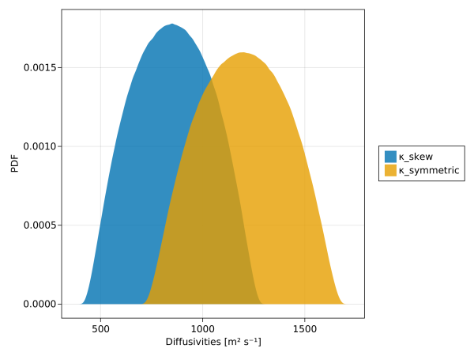
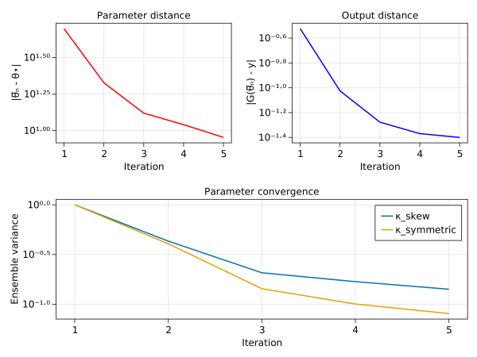
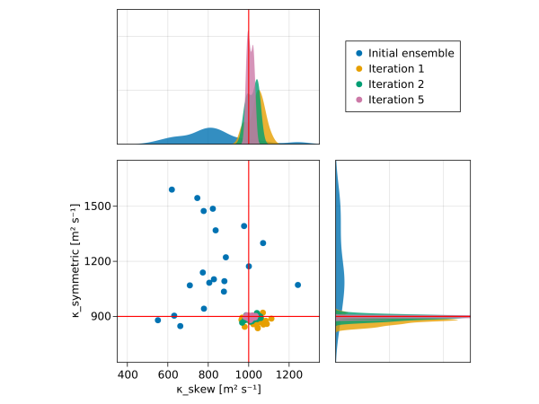

Perfect baroclinic adjustment calibration with Ensemble Kalman Inversion
This example showcases a "perfect model calibration" of the two-dimensional baroclinic adjustement problem (depth-latitude) with eddies parametrized using Gent-McWilliams–Redi isoneutral diffusion closure. We use output for buoyancy ($b$) and a passive-tracer concentration ($c$) to calibrate the parametrization.
Install dependencies
First let's make sure we have all required packages installed.
using Pkg
pkg"add Oceananigans, Distributions, CairoMakie, OceanTurbulenceParameterEstimation"First we load few things
using OceanTurbulenceParameterEstimation
using Oceananigans
using Oceananigans.Units
using Oceananigans.TurbulenceClosures: FluxTapering
using Oceananigans.Models.HydrostaticFreeSurfaceModels: SliceEnsembleSize
using Distributions
using Printf
using LinearAlgebra: normSet up the problem and generate observations
Define the "true" skew and symmetric diffusivity coefficients. These are the parameter values that we use to generate the data. Then, we'll see if the EKI calibration can recover these values.
κ_skew = 1000.0 # [m² s⁻¹] skew diffusivity
κ_symmetric = 900.0 # [m² s⁻¹] symmetric diffusivityWe gather the "true" parameters in a named tuple $θ_*$:
θ★ = (κ_skew = κ_skew, κ_symmetric = κ_symmetric)(κ_skew = 1000.0, κ_symmetric = 900.0)The experiment name and where the synthetic observations will be saved.
experiment_name = "baroclinic_adjustment"
data_path = experiment_name * ".jld2""baroclinic_adjustment.jld2"The domain, number of grid points, and other parameters.
architecture = CPU() # CPU or GPU?
Ly = 1000kilometers # north-south extent [m]
Lz = 1kilometers # depth [m]
Ny = 64 # grid points in north-south direction
Nz = 16 # grid points in the vertical
Δt = 10minute # time-step
stop_time = 1days # length of run
save_interval = 0.25days # save observation every so often
force_generate_observations = false
anisotropic_diffusivity = AnisotropicDiffusivity(κh=100, κz=1e-2)AnisotropicDiffusivity: (νx=0.0, νy=0.0, νz=0.0), (κx=100.0, κy=100.0, κz=0.01)The isopycnal skew-symmetric diffusivity closure.
gerdes_koberle_willebrand_tapering = FluxTapering(1e-2)
gent_mcwilliams_diffusivity = IsopycnalSkewSymmetricDiffusivity(κ_skew = κ_skew,
κ_symmetric = κ_symmetric,
slope_limiter = gerdes_koberle_willebrand_tapering)IsopycnalSkewSymmetricDiffusivity: (κ_symmetric=900.0, κ_skew=1000.0, (isopycnal_tensor=Oceananigans.TurbulenceClosures.SmallSlopeIsopycnalTensor{Int64}(0), slope_limiter=Oceananigans.TurbulenceClosures.FluxTapering{Float64}(0.01))Generate synthetic observations
if force_generate_observations || !(isfile(data_path))
grid = RectilinearGrid(architecture,
topology = (Flat, Bounded, Bounded),
size = (Ny, Nz),
y = (-Ly/2, Ly/2),
z = (-Lz, 0),
halo = (3, 3))
closures = (gent_mcwilliams_diffusivity, anisotropic_diffusivity)
model = HydrostaticFreeSurfaceModel(grid = grid,
tracers = (:b, :c),
buoyancy = BuoyancyTracer(),
coriolis = BetaPlane(latitude=-45),
closure = closures,
free_surface = ImplicitFreeSurface())
@info "Built $model."
##### Initial conditions of an unstable buoyancy front
"""
Linear ramp from 0 to 1 between -Δy/2 and +Δy/2.
For example:
y < y₀ => ramp = 0
y₀ < y < y₀ + Δy => ramp = y / Δy
y > y₀ + Δy => ramp = 1
"""
ramp(y, Δy) = min(max(0, y/Δy + 1/2), 1)
N² = 4e-6 # [s⁻²] buoyancy frequency / stratification
M² = 8e-8 # [s⁻²] horizontal buoyancy gradient
Δy = 50kilometers # horizontal extent of the font
Δc_y = 2Δy # horizontal extent of initial tracer concentration
Δc_z = 50 # [m] vertical extent of initial tracer concentration
Δb = Δy * M² # inital buoyancy jump
bᵢ(x, y, z) = N² * z + Δb * ramp(y, Δy)
cᵢ(x, y, z) = exp(-y^2 / 2Δc_y^2) * exp(-(z + Lz/2)^2 / (2Δc_z^2))
set!(model, b=bᵢ, c=cᵢ)
simulation = Simulation(model, Δt=Δt, stop_time=stop_time)
simulation.output_writers[:fields] = JLD2OutputWriter(model, merge(model.velocities, model.tracers),
schedule = TimeInterval(save_interval),
prefix = experiment_name,
array_type = Array{Float64},
field_slicer = nothing,
force = true)
run!(simulation)
end┌ Info: Built HydrostaticFreeSurfaceModel{Oceananigans.Architectures.CPU, Float64}(time = 0 seconds, iteration = 0)
│ ├── grid: 1×64×16 RectilinearGrid{Float64, Oceananigans.Grids.Flat, Oceananigans.Grids.Bounded, Oceananigans.Grids.Bounded} on Oceananigans.Architectures.CPU with 0×3×3 halo
│ ├── tracers: (:b, :c)
│ ├── closure: Tuple{Oceananigans.TurbulenceClosures.IsopycnalSkewSymmetricDiffusivity{Float64, Float64, Oceananigans.TurbulenceClosures.SmallSlopeIsopycnalTensor{Int64}, Oceananigans.TurbulenceClosures.FluxTapering{Float64}}, Oceananigans.TurbulenceClosures.AnisotropicDiffusivity{Oceananigans.TurbulenceClosures.ExplicitTimeDiscretization, Float64, Float64, Float64, NamedTuple{(:b, :c), Tuple{Float64, Float64}}, NamedTuple{(:b, :c), Tuple{Float64, Float64}}, NamedTuple{(:b, :c), Tuple{Float64, Float64}}}}
│ ├── buoyancy: Oceananigans.BuoyancyModels.Buoyancy{Oceananigans.BuoyancyModels.BuoyancyTracer, Oceananigans.Grids.ZDirection}
│ ├── free surface: Oceananigans.Models.HydrostaticFreeSurfaceModels.ImplicitFreeSurface with gravitational acceleration 9.80665 m s⁻²
│ │ └── solver: Default
└ └── coriolis: Oceananigans.Coriolis.BetaPlane{Float64}.
[ Info: Initializing simulation...
[ Info: ... simulation initialization complete (2.428 seconds)
[ Info: Executing initial time step...
[ Info: ... initial time step complete (1.473 minutes).
[ Info: Simulation is stopping. Model time 1 day has hit or exceeded simulation stop time 1 day.Load truth data as observations
We use here the Transformation functionality to slice up the observation data a bit. In particular, we choose to exclude the 3 grid points on either side of the y dimension, and 3 grid points from the bottom of the domain. Also, we only use the last 3 snapshots of the observations.
We use SpaceIndices and TimeIndices to denote which space-time indices we would like to keep in observations.
transformation = Transformation(space=SpaceIndices(y=4:Ny-3, z=4:Nz), time=TimeIndices(3:5), normalization=ZScore())
observations = SyntheticObservations(data_path; field_names=(:b, :c), transformation)SyntheticObservations with fields (:b, :c)
├── times: [0.0, 21600.0, 43200.0, 64800.0, 86400.0]
├── grid: 1×64×16 RectilinearGrid{Float64, Oceananigans.Grids.Flat, Oceananigans.Grids.Bounded, Oceananigans.Grids.Bounded} on Oceananigans.Architectures.CPU with 0×3×3 halo
├── path: "baroclinic_adjustment.jld2"
├── metadata: (:grid, :coriolis, :closure)
└── transformation: Dict{Symbol, OceanTurbulenceParameterEstimation.Transformations.Transformation{TimeIndices{UnitRange{Int64}}, SpaceIndices{Colon, UnitRange{Int64}, UnitRange{Int64}}, ZScore{Float64}}} with 2 entriesCalibration with Ensemble Kalman Inversion
Ensemble model
First we set up an ensemble model,
ensemble_size = 20
slice_ensemble_size = SliceEnsembleSize(size=(Ny, Nz), ensemble=ensemble_size)
@show ensemble_grid = RectilinearGrid(architecture,
size=slice_ensemble_size,
topology = (Flat, Bounded, Bounded),
y = (-Ly/2, Ly/2),
z = (-Lz, 0),
halo=(3, 3))
gm_ensemble = [deepcopy(gent_mcwilliams_diffusivity) for i = 1:ensemble_size]
closures = (gm_ensemble, anisotropic_diffusivity)
@show ensemble_model = HydrostaticFreeSurfaceModel(grid = ensemble_grid,
tracers = (:b, :c),
buoyancy = BuoyancyTracer(),
coriolis = BetaPlane(latitude=-45),
closure = closures,
free_surface = ImplicitFreeSurface())HydrostaticFreeSurfaceModel{Oceananigans.Architectures.CPU, Float64}(time = 0 seconds, iteration = 0)
├── grid: 20×64×16 RectilinearGrid{Float64, Oceananigans.Grids.Flat, Oceananigans.Grids.Bounded, Oceananigans.Grids.Bounded} on Oceananigans.Architectures.CPU with 0×3×3 halo
├── tracers: (:b, :c)
├── closure: Tuple{Vector{Oceananigans.TurbulenceClosures.IsopycnalSkewSymmetricDiffusivity{Float64, Float64, Oceananigans.TurbulenceClosures.SmallSlopeIsopycnalTensor{Int64}, Oceananigans.TurbulenceClosures.FluxTapering{Float64}}}, Oceananigans.TurbulenceClosures.AnisotropicDiffusivity{Oceananigans.TurbulenceClosures.ExplicitTimeDiscretization, Float64, Float64, Float64, NamedTuple{(:b, :c), Tuple{Float64, Float64}}, NamedTuple{(:b, :c), Tuple{Float64, Float64}}, NamedTuple{(:b, :c), Tuple{Float64, Float64}}}}
├── buoyancy: Oceananigans.BuoyancyModels.Buoyancy{Oceananigans.BuoyancyModels.BuoyancyTracer, Oceananigans.Grids.ZDirection}
├── free surface: Oceananigans.Models.HydrostaticFreeSurfaceModels.ImplicitFreeSurface with gravitational acceleration 9.80665 m s⁻²
│ └── solver: Default
└── coriolis: Oceananigans.Coriolis.BetaPlane{Float64}and then we create an ensemble simulation:
ensemble_simulation = Simulation(ensemble_model; Δt, stop_time)
ensemble_simulationSimulation{typename(Oceananigans.Models.HydrostaticFreeSurfaceModels.HydrostaticFreeSurfaceModel){typename(Oceananigans.Architectures.CPU), Float64}}
├── Model clock: time = 0 seconds, iteration = 0
├── Next time step: 10 minutes
├── Elapsed wall time: 0 seconds
├── Stop time: 1 day
├── Stop iteration : Inf
├── Wall time limit: Inf
├── Callbacks: typename(OrderedCollections.OrderedDict) with 4 entries:
│ ├── stop_time_exceeded => typename(Oceananigans.Simulations.Callback)
│ ├── stop_iteration_exceeded => typename(Oceananigans.Simulations.Callback)
│ ├── wall_time_limit_exceeded => typename(Oceananigans.Simulations.Callback)
│ └── nan_checker => typename(Oceananigans.Simulations.Callback)
├── Output writers: typename(OrderedCollections.OrderedDict) with no entries
└── Diagnostics: typename(OrderedCollections.OrderedDict) with no entriesFree parameters
We construct some prior distributions for our free parameters. We found that it often helps to constrain the prior distributions so that neither very high nor very low values for diffusivities can be drawn out of the distribution.
priors = (κ_skew = ScaledLogitNormal(bounds=(400.0, 1300.0)),
κ_symmetric = ScaledLogitNormal(bounds=(700.0, 1700.0)))
free_parameters = FreeParameters(priors)FreeParameters with 2 parameters
├── names: (:κ_skew, :κ_symmetric)
└── priors: Dict{Symbol, Any}
├── κ_skew => ScaledLogitNormal{Float64}(μ=0.0, σ=1.0, lower_bound=400.0, upper_bound=1300.0)
└── κ_symmetric => ScaledLogitNormal{Float64}(μ=0.0, σ=1.0, lower_bound=700.0, upper_bound=1700.0)To visualize the prior distributions we randomly sample out values from then and plot the p.d.f.
using CairoMakie
using OceanTurbulenceParameterEstimation.Parameters: unconstrained_prior, transform_to_constrained
samples(prior) = [transform_to_constrained(prior, x) for x in rand(unconstrained_prior(prior), 10000000)]
samples_κ_skew = samples(priors.κ_skew)
samples_κ_symmetric = samples(priors.κ_symmetric)
fig = Figure()
ax = Axis(fig[1, 1], xlabel = "Diffusivities [m² s⁻¹]", ylabel = "PDF")
densities = []
push!(densities, density!(ax, samples_κ_skew))
push!(densities, density!(ax, samples_κ_symmetric))
Legend(fig[1, 2], densities, ["κ_skew", "κ_symmetric"], position = :lb)
The inverse problem
We can construct the inverse problem $y = G(θ) + η$. Here, $y$ are the observations and $G$ is the ensemble_model.
calibration = InverseProblem(observations, ensemble_simulation, free_parameters)InverseProblem{ConcatenatedOutputMap}
├── observations: SyntheticObservations of (:b, :c) on 1×64×16 RectilinearGrid{Float64, Oceananigans.Grids.Flat, Oceananigans.Grids.Bounded, Oceananigans.Grids.Bounded} on Oceananigans.Architectures.CPU with 0×3×3 halo
├── simulation: Simulation on 20×64×16 RectilinearGrid{Float64, Oceananigans.Grids.Flat, Oceananigans.Grids.Bounded, Oceananigans.Grids.Bounded} on Oceananigans.Architectures.CPU with 0×3×3 halo with Δt=600.0
├── free_parameters: (:κ_skew, :κ_symmetric)
└── output map: ConcatenatedOutputMapAssert that $G(θ_*) ≈ y$
As a sanity check we apply the forward_map on the calibration after we initialize all ensemble members with the true parameter values. We then confirm that the output of the forward_map matches the observations to machine precision.
G = forward_map(calibration, θ★)
y = observation_map(calibration)[ Info: Initializing simulation...
[ Info: ... simulation initialization complete (838.315 ms)
[ Info: Executing initial time step...
[ Info: ... initial time step complete (1.016 minutes).
[ Info: Simulation is stopping. Model time 1 day has hit or exceeded simulation stop time 1 day.The forward_map output G is a two-dimensional matrix whose first dimension is the size of the state space. Here, after the transformation we applied to the observations, we have that the state space size is $2 \times (N_y - 6) \times (N_z - 3) \times 3$; the 2 comes from the two tracers we used as observations and the 3 comes from only using the last three snapshots of the observations. The second dimension of the forward_map output is the ensemble_size.
@show size(G) == (2 * (Ny-6) * (Nz-3) * 3, ensemble_size)trueSince above we computed G using the true parameters $θ_*$, all columns of the forward map output should be the same as the observations:
mean(G, dims=2) ≈ ytrueNext, we construct an EnsembleKalmanInversion (EKI) object,
eki = EnsembleKalmanInversion(calibration; noise_covariance = 1e-2)EnsembleKalmanInversion
├── inverse_problem: InverseProblem
├── ensemble_kalman_process: EnsembleKalmanProcesses.EnsembleKalmanProcessModule.EnsembleKalmanProcess{Float64, Int64, EnsembleKalmanProcesses.EnsembleKalmanProcessModule.Inversion}
├── mapped_observations: 4524-element Vector{Float64}
├── noise_covariance: 4524×4524 Matrix{Float64}
├── inverting_forward_map: OceanTurbulenceParameterEstimation.EnsembleKalmanInversions.var"#inverting_forward_map#4"
├── iteration: 0
├── resampler: Resampler{FullEnsembleDistribution}├── unconstrained_parameters: Matrix{Float64}
└── forward_map_output: Matrix{Float64}and perform few iterations to see if we can converge to the true parameter values.
params = iterate!(eki; iterations = 5)
@show params(κ_skew = 1008.4223634998161, κ_symmetric = 896.9188113575574)Last, we visualize few metrics regarding how the EKI calibration went about.
θ̅(iteration) = [eki.iteration_summaries[iteration].ensemble_mean...]
varθ(iteration) = eki.iteration_summaries[iteration].ensemble_var
weight_distances = [norm(θ̅(iter) - [θ★[1], θ★[2]]) for iter in 1:eki.iteration]
output_distances = [norm(forward_map(calibration, θ̅(iter))[:, 1] - y) for iter in 1:eki.iteration]
ensemble_variances = [varθ(iter) for iter in 1:eki.iteration]
f = Figure()
lines(f[1, 1], 1:eki.iteration, weight_distances, color = :red, linewidth = 2,
axis = (title = "Parameter distance",
xlabel = "Iteration",
ylabel="|θ̅ₙ - θ⋆|",
yscale = log10))
lines(f[1, 2], 1:eki.iteration, output_distances, color = :blue, linewidth = 2,
axis = (title = "Output distance",
xlabel = "Iteration",
ylabel="|G(θ̅ₙ) - y|",
yscale = log10))
ax3 = Axis(f[2, 1:2], title = "Parameter convergence",
xlabel = "Iteration",
ylabel = "Ensemble variance",
yscale = log10)
for (i, pname) in enumerate(free_parameters.names)
ev = getindex.(ensemble_variances, i)
lines!(ax3, 1:eki.iteration, ev / ev[1], label = String(pname), linewidth = 2)
end
axislegend(ax3, position = :rt)[ Info: Initializing simulation...
[ Info: ... simulation initialization complete (875.440 μs)
[ Info: Executing initial time step...
[ Info: ... initial time step complete (9.536 ms).
[ Info: Simulation is stopping. Model time 1 day has hit or exceeded simulation stop time 1 day.
[ Info: Initializing simulation...
[ Info: ... simulation initialization complete (950.644 μs)
[ Info: Executing initial time step...
[ Info: ... initial time step complete (9.550 ms).
[ Info: Simulation is stopping. Model time 1 day has hit or exceeded simulation stop time 1 day.
[ Info: Initializing simulation...
[ Info: ... simulation initialization complete (688.131 μs)
[ Info: Executing initial time step...
[ Info: ... initial time step complete (8.720 ms).
[ Info: Simulation is stopping. Model time 1 day has hit or exceeded simulation stop time 1 day.
[ Info: Initializing simulation...
[ Info: ... simulation initialization complete (762.435 μs)
[ Info: Executing initial time step...
[ Info: ... initial time step complete (9.145 ms).
[ Info: Simulation is stopping. Model time 1 day has hit or exceeded simulation stop time 1 day.
[ Info: Initializing simulation...
[ Info: ... simulation initialization complete (821.738 μs)
[ Info: Executing initial time step...
[ Info: ... initial time step complete (9.256 ms).
[ Info: Simulation is stopping. Model time 1 day has hit or exceeded simulation stop time 1 day.
And also we plot the the distributions of the various model ensembles for few EKI iterations to see if and how well they converge to the true diffusivity values.
f = Figure()
axtop = Axis(f[1, 1])
axmain = Axis(f[2, 1],
xlabel = "κ_skew [m² s⁻¹]",
ylabel = "κ_symmetric [m² s⁻¹]")
axright = Axis(f[2, 2])
scatters = []
labels = String[]
for iteration in [0, 1, 2, 5]
# Make parameter matrix
parameters = eki.iteration_summaries[iteration].parameters
Nensemble = length(parameters)
Nparameters = length(first(parameters))
parameter_ensemble_matrix = [parameters[i][j] for i=1:Nensemble, j=1:Nparameters]
label = iteration == 0 ? "Initial ensemble" : "Iteration $iteration"
push!(labels, label)
push!(scatters, scatter!(axmain, parameter_ensemble_matrix))
density!(axtop, parameter_ensemble_matrix[:, 1])
density!(axright, parameter_ensemble_matrix[:, 2], direction = :y)
end
vlines!(axmain, [κ_skew], color = :red)
vlines!(axtop, [κ_skew], color = :red)
hlines!(axmain, [κ_symmetric], color = :red)
hlines!(axright, [κ_symmetric], color = :red)
colsize!(f.layout, 1, Fixed(300))
colsize!(f.layout, 2, Fixed(200))
rowsize!(f.layout, 1, Fixed(200))
rowsize!(f.layout, 2, Fixed(300))
Legend(f[1, 2], scatters, labels, position = :lb)
hidedecorations!(axtop, grid = false)
hidedecorations!(axright, grid = false)
xlims!(axmain, 350, 1350)
xlims!(axtop, 350, 1350)
ylims!(axmain, 650, 1750)
ylims!(axright, 650, 1750)
xlims!(axright, 0, 0.025)
ylims!(axtop, 0, 0.025)
This page was generated using Literate.jl.